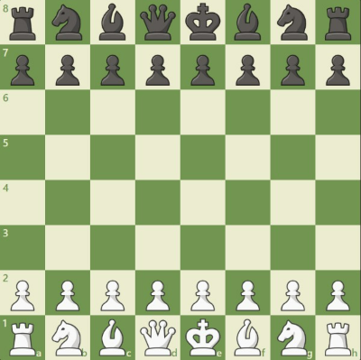
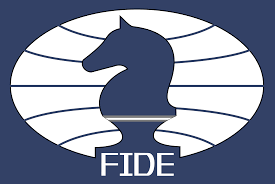

CIRCOLO INFINITY
Gli scacchi
Cosa sono?
Gli scacchi sono un gioco di strategia che si svolge su una tavola quadrata detta scacchiera, formata da 64 caselle di due colori alternati, sulla quale ogni giocatore dispone di 16 pezzi.
Ogni sfidante posside un re, una donna, due alfieri, due cavalli, due torri e otto pedoni.
Ogni casella può essere occupata da un solo pezzo, che può catturare o "mangiare" il pezzo avversario andando a occuparne la casella; obiettivo del gioco è dare scacco matto, ovvero minacciare la cattura del re avversario in modo tale che l'altro giocatore non possa eseguire mosse legali.
Come muovre i pezzi
Ciascun pezzo degli scacchi si muove con precise modalità. Si posso muoversi su una casa occupata da un pezzo avversario, effettuando in tal caso una cattura ovvero viene tolto il pezzo nemico prendendo il posseso della casella. Si dice che un pezzo attacca una casa se esso può muoversi su di essa.
- La torre può muoversi su una qualunque casa della stessa traversa o della stessa colonna rispetto a quella in cui si trova, purché per raggiungerla non debba attraversare case occupate dai pezzi.
- L'alfiere può muoversi su una qualunque casa della stessa diagonale rispetto a quella in cui si trova. Ciascun alfiere non può mai cambiare il colore delle case su cui si muove e i due alfieri inizialmente a disposizione del giocatore si muovono uno solo su case bianche e l'altro solo su case nere. Per questo gli alfieri vengono definiti alfiere campochiaro o alfiere camposcuro a seconda del colore delle case in cui si trovano.
- La donna è il pezzo più potente di tutti e combina le mosse dell'alfiere con quelle della torre, potendo quindi muoversi su tutte le case della stessa traversa, della stessa colonna e della stessa diagonale della casa su cui si trova.
- Il cavallo può muoversi su una delle case a lui più vicine che non appartengono alla traversa, alla colonna e alle diagonali passanti per la sua casa di partenza. Il movimento del cavallo può essere immaginato come la somma di uno spostamento orizzontale di una casa e di uno spostamento verticale di due caselle o viceversa. Il cavallo è inoltre l'unico pezzo che può attraversare anche caselle già occupate da altri pezzi.
- Il pedone segue diverse regole di movimento leggermente più complesse. Alla sua prima mossa ciascun pedone può muovere di una oppure due case in avanti, a scelta del giocatore, a patto che la casa di destinazione e la casa saltata siano libere. Nelle sue mosse successive il pedone può muoversi solo di una casa in avanti per mossa. A differenza degli altri pezzi, non può muovere all'indietro. Può catturare un pezzo nemico solo se si trova su una delle due case poste diagonalmente in avanti rispetto alla sua casa di partenza, non è consentito catturare i pezzi che si trovano nelle case che ha di fronte. Se un pedone riesce ad avanzare fino all'ottava traversa, viene promosso, ossia assume il ruolo e le capacità di movimento di un altro pezzo dello stesso colore (donna, torre, alfiere o cavallo) a scelta del giocatore.
Come giocare
Lo scopo degli scacchi consiste nel dare scacco matto al re avversario. Si ha scacco matto quando il re si trova sotto la minaccia diretta dei pezzi avversari e non ha possibilità di sottrarsi a essa, quindi sarebbe sicuramente catturato alla mossa successiva se non si trattasse del re. Lo scacco matto determina la conclusione della partita con la sconfitta del giocatore che lo subisce. Lo scacco invece è l'attacco che un pezzo avversario porta al re e da cui il re può essere protetto.
Il regolamento non consente di eseguire alcuna mossa che metta o lasci il proprio re sotto scacco. La partita può terminare anche per abbandono da parte di un contendente con la vittoria dell'altro giocatore.
Il gioco termina in patta ovvero in parità nei seguenti casi:
- se restano sulla scacchiera soltanto i due re.
- se la situazione è tale per cui nessuno dei due giocatori può dare scacco matto all'altro.
- se il giocatore che ha il tratto non ha il re sotto scacco ma al contempo non può eseguire nessuna mossa legale in questo caso viene chiamato stallo.
- se la partita termina con una patta su richiesta di un giocatore
- se l'ultima mossa è l'ulima di una serie di cinquanta mosse consecutive nelle quali non è stato catturato alcun pezzo e non è stato mosso alcun pedone
- se l'ultima mossa comporta la ripetizione sulla scacchiera della stessa posizione per tre volte durante la partita. La posizione è considerata identica se la mossa spetta al medesimo giocatore, se tutti i pezzi del medesimo genere e colore si trovano sulle stesse case e se sussistono inalterate le stesse possibilità di movimento.
Partite e tornei
Gioco a tempo
Nelle partite è molto comune usare un limite di tempo. Le partite ufficili infatti adoperano questa modalità e si distinguono in:
- Tempo lungo chiamate anche standard o classic: partite con un tempo di riflessione pari o superiore ai 60 minuti per giocatore. Nei principali tornei accreditati dalla FIDE si utilizza una cadenza standard di 90 minuti a testa per le prime 40 mosse con un'aggiunta di 30 minuti al termine della mossa nuemro 40 mossa ed un incremento di tempo di 30 secondi per ogni mossa. Con tale cadenza le partite hanno una durata massima complessiva di circa 8 ore.
- Gioco rapido chiamate anche rapid: la cadenza di gioco prevede un tempo di riflessione superiore ai 10 minuti e inferiore ai 60 minuti per giocatore.
- Lampo chiamate anche blitz: la cadenza di gioco prevede un tempo di riflessione pari o inferiore ai 10 minuti per giocatore.
Aperture
L'apertura indica nel gioco degli scacchi la prima fase della partita. Si tratta di una fase molto importante in quanto tutti i pezzi sono presenti sulla scacchiera e i guadagni di spazio, posizione e pezzi determineranno in maniera significativa lo sviluppo del mediogioco e lo svolgimento della partita nel suo complesso. Come regola, il giocatore che muove i pezzi bianchi dà inizio alla partita muovendo per primo.
Alcune aperture importanti e molto giocate nei tornei:
- Gambetto di donna (1.d4 d5 2.c4)
- Difesa siciliana (1.e4 c5)
- Partita inglese (1.c4 ...)
- Difesa francese (1.e4 e6)
- Difesa est-indiana (1.d4 Cf6 2.c4 g6 3.Cc3 Ag7)
- Partita spagnola (1.e4 e5 2.Cf3 Cc6 3.Ab5)
- Difesa Caro-Kann (1.e4 c6)
- Apertura Réti (1.Cf3 d5 2.c4)
- Attacco est-indiano (1.Cf3 ... 2.g3)
- Difesa olandese (1.d4 f5)
- Difesa nimzo-indiana (1. d4 Cf6 2. c4 e6 3. Cc3 Ab4)
- Difesa ovest-indiana (1.d4 Cf6 2.c4 e6 3.Cf3 b6)
- Gambetto di donna rifiutato (1. d4 d5 2. c4 e6)
- Gambetto di donna accettato (1. d4 d5 2. c4 dxc4)
- Gambetto di re (1.e4 e5 2.f4)
- Partita italiana (1.e4 e5 2.Cf3 Cc6 3.Ac4 Ac5 4.c3)
- Partita catalana (1.d4 Cf6 2.c4 e6 3.g3 d5)
Dai un occhiata ai giocatori più forti al momento
Le modalità di gioco standard, rapid e blitz sono ufficialmente riconosciute dalla FIDE e i giocatori che abbiano ottenuto risultati utili in tornei accreditati dalla federazione ottengono punteggi Elo distinti per ognuna delle modalità. Esistono campionati del mondo dedicati a tutte e tre le specialità, tuttavia il titolo di campione del mondo è riferito unicamente al vincitore del campionato del mondo di scacchi giocato con cadenza standard.
I seguenti nomi sono stati presi direttamento dalla classifica dalla federazione internazionale degli scacchi, nota con l'acronimo francese FIDE, è un'organizzazione internazionale che regolamenta e controlla l'attività scacchistica a livello mondiale
I più forti giocartori al momento sono:
OPEN : Carlsen Magnus
WOMEN : Hou, Yifan
JUNIORS : Gukesh Dommaraju
GIRLS: Divya Deshmukh
Clicca sull'immagine per saperne di più sulla FIDE
